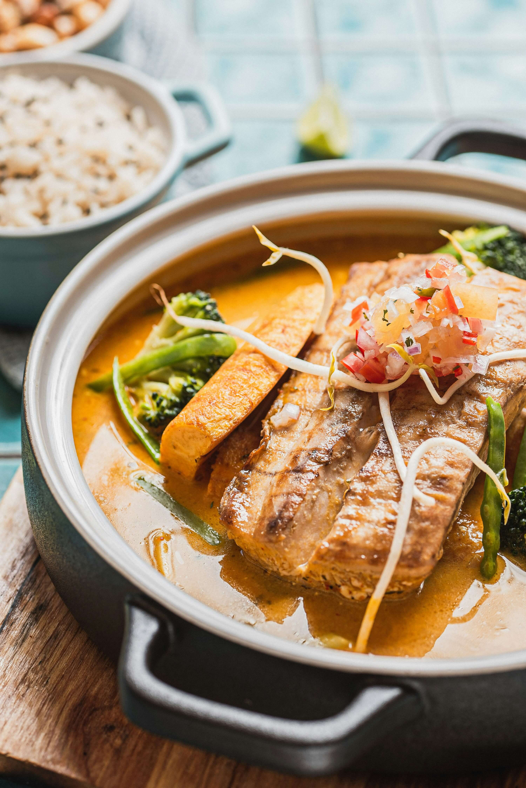
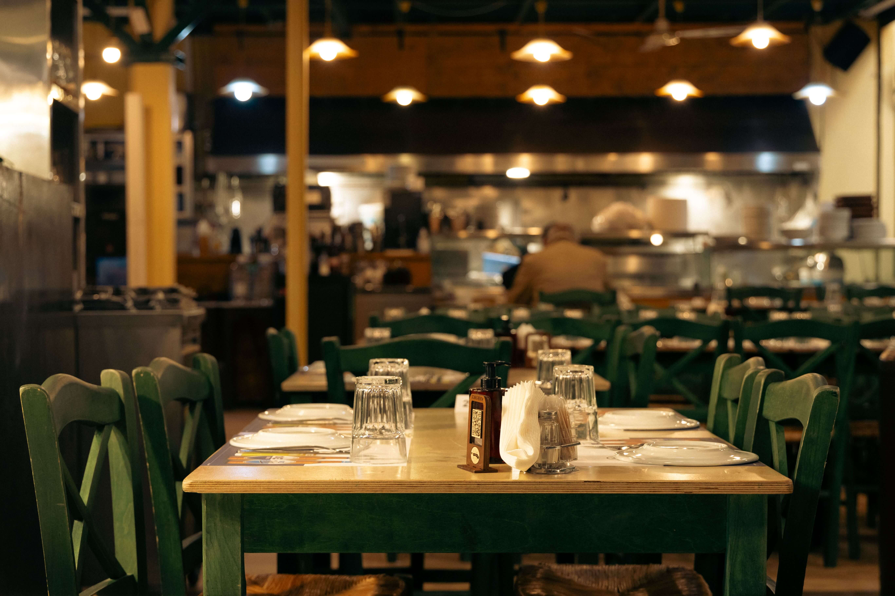
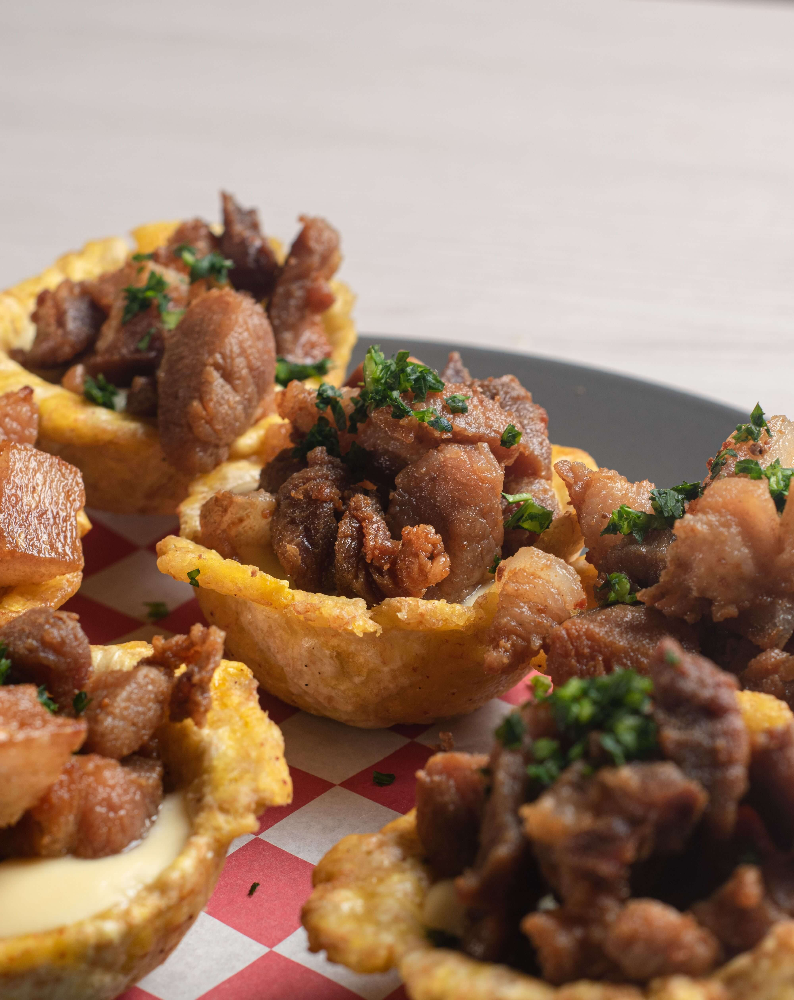
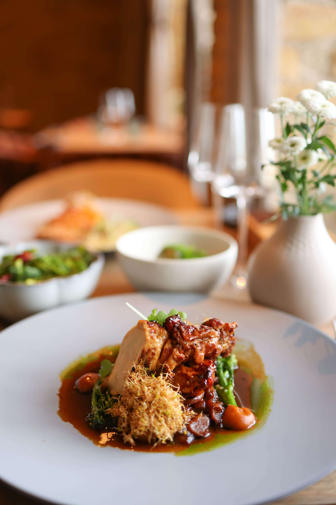

Poisson gros sel
Poisson frais mijoté dans une sauce légère aux herbes et au citron vert.
26 $

Une cuisine créole et internationale, préparée avec passion et servie avec le sourire.
Chez Judd Resto, chaque repas est une invitation à se retrouver. Nos chefs travaillent des produits frais, sélectionnés chaque matin, pour vous offrir des plats savoureux et généreux. Que ce soit pour un dîner en famille, un repas d’affaires ou une soirée entre amis, nous vous accueillons comme à la maison.

Poisson frais mijoté dans une sauce légère aux herbes et au citron vert.
26 $

Morceaux de porc marinés aux agrumes, frits puis servis avec pikliz maison.
22 $

Poulet tendre mijoté dans une sauce tomate épicée, accompagné de riz collé.
19 $
Nos ingrédients sont achetés chaque jour auprès de fournisseurs locaux.
Sauces, marinades et desserts sont préparés sur place.
Notre équipe met tout en œuvre pour que vous passiez un moment agréable.
« Le meilleur griot que j’ai mangé depuis longtemps. Service rapide et très aimable. »
« Une ambiance familiale et des portions généreuses. Nous reviendrons ! »
« Parfait pour un dîner d’équipe. Tout le monde a adoré. »
Réservez en ligne en moins d’une minute et laissez-nous nous occuper du reste.
Réserver maintenant